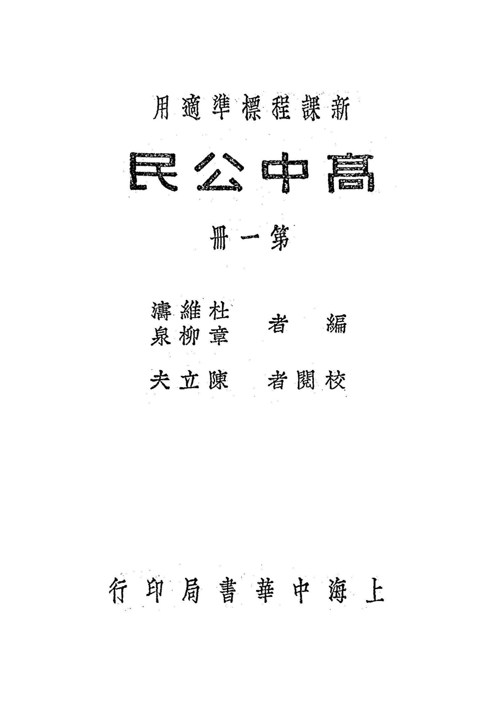

Occurrences
53
Exact minzu hits in this book

Textbook
This view contains all KWIC results for 民族 in this book, followed by the book's individual frequency result.
This table lists every minzu KWIC result found in this textbook.
| No. | Left context | Keyword | Right context |
|---|---|---|---|
| 170 | 第二章家庭問題第一節家庭之起源家庭與社會我們剖析現代的社會,無論在那一個 | 民族 | ,都以家庭爲其組織的基本單位;就是實行社會主義的斯拉|夫民族,也還不能脫離家庭的形式。所以,社會學鼻 |
| 171 | 庭與社會我們剖析現代的社會,無論在那一個民族,都以家庭爲其組織的基本單位;就是實行社會主義的斯拉|夫 | 民族 | ,也還不能脫離家庭的形式。所以,社會學鼻祖孔|德氏(AugusteComte)所說:『社會組織的單位 |
| 172 | 家庭,』還可以稱作一般社會的通則。家庭之條件何謂家庭?其構成的形式與其內部的活動,因地理、時代、及其 | 民族 | 之文化程度而各不同。但旣稱爲家庭,照說起來,必須合於左列兩個條件:一有固定的住所無論其居住之所,爲租 |
| 173 | ,則此種宗敎的形式,當亦爲產生家庭之一因。家庭發生的原因,旣如上述;至欲推究其起源於何時,則須視各個 | 民族 | 的文化史而定。註冖一」語見孟_子滕文公上、九第一編第二章家庭問題 |
| 174 | ;子女都從母姓,財產亦歸母有;此種家庭,可稱作「母系家庭」。「母系家庭」,必在「父系家庭」之先,爲各 | 民族 | 所同然,亦爲人類學、社會學、歷史學者所共認。證以我國舊說,莊_子:『神|農之世,民知其母,不知其父。 |
| 175 | 姓,如「姚」「姜」「姬」「姒」「嬀」「嫄」「姑」「妘」等,皆可知其從母姓;可見此種原始的家庭體制,我 | 民族 | 也不是例外。巴|格度氏(Bogardus)曾說明其理由:『母系制所以發達的緣故,是因爲在古代社會裏, |
| 176 | 第三章人口問題第一節人口增減之原因與結果人口繁殖的主張人口爲社會組織的最要原素,人口的增減,足以影響 | 民族 | 幸福及民族文化。歷來文化進步、人民安樂的社會,大槪都有繁密的人口。因爲人口增多,始能集合衆力以謀公共 |
| 177 | 問題第一節人口增減之原因與結果人口繁殖的主張人口爲社會組織的最要原素,人口的增減,足以影響民族幸福及 | 民族 | 文化。歷來文化進步、人民安樂的社會,大槪都有繁密的人口。因爲人口增多,始能集合衆力以謀公共的幸福與文 |
| 178 | 的特殊情形。我們可以說,求人口的增加,爲人類的共同主張。由歷史上觀察,更按以近代的統計,則各個優勝的 | 民族 | ,其人口之逐時增加,亦屬顯著而正確的事實。人口增加的原因人口增加的原因,大抵不外左列四端:一、由於人 |
| 179 | 九二一|三一一.五三.九瑞典一九二〇|三〇五.四一‘五所以從大體說,人口的增加,爲必然的傾向;但就各 | 民族 | 、各國家一一分別統計,則人口之減少亦自不一其例。人口減少的原因人口減少的原因,在馬|氏所謂「避免的限 |
| 180 | 極的限制」變爲「避免的限制」而已。但在世界大同之前,各 | 民族 | 都有出人頭地以排斥異己的企圖,一個國家,如果人口日趨於減少,卽無異自處於劣敗的地位,而漸歸於滅亡。故 |
| 181 | 圖,一個國家,如果人口日趨於減少,卽無異自處於劣敗的地位,而漸歸於滅亡。故人口減少的結果,遂爲一般的 | 民族 | 或國家所重視。中|國人口增加的必要孫中|山先生遺敎謂:『中|國是全世界氣候最溫和的地方,物產頂豐富的 |
| 182 | 們便用多數來征服少數,一定要併吞中|國;到了那個時候,中國不但失去主權,要亡國,中|國人幷且要被他們 | 民族 | 所消化,還要滅種。』CIJ把人口減少的危險,和中|國人口有力求增加的必要,指示我們,其言實最明切。註 |
| 183 | ,還要滅種。』CIJ把人口減少的危險,和中|國人口有力求增加的必要,指示我們,其言實最明切。註〔一見 | 民族 | 主義⋮第一講。第二節鄕村人口與都市人口都市人口一個國家,要是人口的增加率,並未超過與土地物產之平衡, |
| 184 | ,則當一國人口過剩、一國土地有餘之時,雖然也有接受的可能;但有時一國雖人口稀少,而因工商業上的競爭與 | 民族 | 的觀念,都不願或拒絕他國人民移入;那麼在移民的國家,便失去了容納其移民的場所。至於在他國也感人口過剩 |
| 185 | 人;如用移民政策以調節本部的人口,實不如歐|美各國必須向外國發展的困難。所以東北四省的損失,實在是我 | 民族 | 生命的根本損失。第四節生育限制與優生學限制人口的重要帝國主義者以「廣土衆民」爲政策;現在已漸漸發現這 |
| 186 | 避免國際間的衝突與敵愾,並要求人民的生活程度提高與文化增進,不得不設法限制人口的膨脹。蓋國家的强弱, | 民族 | 的盛衰,須視人口品質爲轉移,而不在人口的多寡。再就生活方面說:我們寧願有稀少的人口,可以享受高尙優美 |
| 187 | 明社會中一個主要的問題。限制的性質所謂人口的限制,與人口的減少不同:人口的減少,是由衰落的趨勢以迄於 | 民族 | 滅亡;人口的限制,則在要求保持一民族或一國家人口與土地物産的永久平衡。依自然的情勢,人口原受「積極的 |
| 188 | 謂人口的限制,與人口的減少不同:人口的減少,是由衰落的趨勢以迄於民族滅亡;人口的限制,則在要求保持一 | 民族 | 或一國家人口與土地物産的永久平衡。依自然的情勢,人口原受「積極的限制」,如第一節中所述二九第一編第三 |
| 189 | 進化必速。合從前的斯巴|達,現在的德|意志,都是曾經採用這種方法的。平心論之,這種方法,除陰鷙强悍的 | 民族 | 外,難於普遍實行;卽使實行,恐怕人類所恃以相維相繫的天良,必爲殘酷的心思所喪盡。習成風氣,反違背優生 |
| 190 | 其家庭的兒童保育。上述各種弊害,不僅是童女工本身所受的弊害;而且在人口的質與量方面,橫加摧殘,影響於 | 民族 | 的生存也很大。所以凡屬工業國家,都盛行「勞動立法」|用立法的方式,强迫資本家實行,以資救濟。在我國, |
| 191 | 農業人口,至少當占全人口百分之八十以上,近年以來,農村破產的呼聲,不絕於耳;由時代的劇變,致造成整個 | 民族 | 的恐慌,其嚴重性固非任何國家所可見。農村衰落之原因中|國農村衰落的原因,可以分析如下:一資本帝國主義 |
| 192 | 響於工商業的發展;3.因失業的窮於救濟,墮落者的增加,而影響於社會的安寧;生因死亡率的增加,而影響於 | 民族 | 的健全。第二節農民之生活狀況農民生活狀況之反映農民的生活狀況,可以從他們在土地及生產方面的狀況反映出 |
| 193 | 上沒有一片荒地,而可以叫做國家的。組織國家的全體人民,又叫做國民。一國的國民,未必就是同一人種或同一 | 民族 | 。近代國家,有以民族主義相號召,而促成所謂「民族國家」者;也有合許多民族,成爲一個國家者。二土地國家 |
| 194 | 以叫做國家的。組織國家的全體人民,又叫做國民。一國的國民,未必就是同一人種或同一民族。近代國家,有以 | 民族 | 主義相號召,而促成所謂「民族國家」者;也有合許多民族,成爲一個國家者。二土地國家是地域的團體,如果僅 |
| 195 | 人民,又叫做國民。一國的國民,未必就是同一人種或同一民族。近代國家,有以民族主義相號召,而促成所謂「 | 民族 | 國家」者;也有合許多民族,成爲一個國家者。二土地國家是地域的團體,如果僅有人民而無一定占領的土地,也 |
| 196 | 國民,未必就是同一人種或同一民族。近代國家,有以民族主義相號召,而促成所謂「民族國家」者;也有合許多 | 民族 | ,成爲一個國家者。二土地國家是地域的團體,如果僅有人民而無一定占領的土地,也絕不能成爲國家。例如游牧 |
| 197 | 成爲國家。例如游牧種族,人民逐水草而居,沒有固定的生活根據地|就是沒有固定的領土;或是像現在的猶|太 | 民族 | ,散居在各國,也沒有固定的領土,所以都不能成爲國家。所謂國家的領土,(不必一定要連接在一起,像英|國 |
| 198 | 途徑。|中國現在必須要努力國民革命,求中|國的自由平等,纔能進而謀全世界人類文化的融合統一,打破國家 | 民族 | 的界限,以達到大同世界。所以我們反對前述各派的國家觀而另有我們三民主義的國家觀。註冖一」見柯|爾著工 |
| 199 | e),由聯邦代表大會選出委員四百餘人組織之,分爲「聯邦院」(Counciloftbeunion)及「 | 民族 | 院」(Councilofthenationalities)二院,合爲中央執行委員會,每年開會三次,包 |
| 200 | 最高權力歸於聯邦常務委員會(Presidium或譯理事部、主席團等)行使,有委員二十七人,由聯邦院及 | 民族 | 院各選九人,再兩院聯合選出九人組織之,推出主席七人,輪流執行職務。常務委員會之職權明載於憲法,在法律 |
| 201 | (一)資產階級的黨,(二)中小資產階級的黨,(三)無產階級的黨三種;如依革命的目標來分,則有(一)以 | 民族 | 革命爲目標的 |
| 202 | 報復的、欺騙的、暴動的;如蘇|俄的共產黨及受其指揮的各國共產黨都是。革命目:標不同的各政黨(一)僅以 | 民族 | 革命爲目標,而求一民族或數個民族的解放者,如土耳其、埃及及印度等國的國民黨。(二)不滿意於國內政治現 |
| 203 | ;如蘇|俄的共產黨及受其指揮的各國共產黨都是。革命目:標不同的各政黨(一)僅以民族革命爲目標,而求一 | 民族 | 或數個民族的解放者,如土耳其、埃及及印度等國的國民黨。(二)不滿意於國內政治現狀,實行政治革命而組織 |
| 204 | 的共產黨及受其指揮的各國共產黨都是。革命目:標不同的各政黨(一)僅以民族革命爲目標,而求一民族或數個 | 民族 | 的解放者,如土耳其、埃及及印度等國的國民黨。(二)不滿意於國內政治現狀,實行政治革命而組織的黨,如英 |
| 205 | 國|民黨與各種政黨的區別(一)中國國|民黨並不是代表任何一階級利益的黨,而是代表一切被壓迫民衆被壓迫 | 民族 | 的利益,卽是代表一切被壓迫階級的黨。(二)中國國民黨不是以某種革命爲目標,而是以民族、政治、經濟三者 |
| 206 | 被壓迫民衆被壓迫民族的利益,卽是代表一切被壓迫階級的黨。(二)中國國民黨不是以某種革命爲目標,而是以 | 民族 | 、政治、經濟三者爲革命目標的黨,求民族、政治、經濟三大問題同時得到澈底的合理的全部的解決的革命黨。( |
| 207 | 切被壓迫階級的黨。(二)中國國民黨不是以某種革命爲目標,而是以民族、政治、經濟三者爲革命目標的黨,求 | 民族 | 、政治、經濟三大問題同時得到澈底的合理的全部的解決的革命黨。(三)中國國民黨反對狹義的甚麼國家主義與 |
| 208 | 到澈底的合理的全部的解決的革命黨。(三)中國國民黨反對狹義的甚麼國家主義與聳人聽聞的國際主義,乃是以 | 民族 | 、民權、民生三大問題爲革命的主義,由國民革命而進到世界革命,爲世界一切被壓迫民衆被壓迫民族打不平的革 |
| 209 | 義,乃是以民族、民權、民生三大問題爲革命的主義,由國民革命而進到世界革命,爲世界一切被壓迫民衆被壓迫 | 民族 | 打不平的革命黨。綜上所述,中國|國民黨與現在世界上任何政黨都不同,乃是奉行三民主義,實現總理遺敎,代 |
| 210 | ,中國|國民黨與現在世界上任何政黨都不同,乃是奉行三民主義,實現總理遺敎,代表一切被壓迫民衆和被壓迫 | 民族 | ,以反抗幷毀滅一切壓迫勢力,而實現人類的共同幸福,爲救|中國|、救世界的獨一無二的革命黨;其動機在於 |
| 211 | 。他的理想,第一建設民有、民治、民享的新中|國,第二促進共有、共治、共享的大同世界的實現。分析來說, | 民族 | 主義,在求民族間的自由平等,一則中|國民族自求解放,國內各民族一律平等;一則求⋮世界一切被壓迫民族的 |
| 212 | 一建設民有、民治、民享的新中|國,第二促進共有、共治、共享的大同世界的實現。分析來說,民族主義,在求 | 民族 | 間的自由平等,一則中|國民族自求解放,國內各民族一律平等;一則求⋮世界一切被壓迫民族的解放。民權主義 |
| 213 | |國,第二促進共有、共治、共享的大同世界的實現。分析來說,民族主義,在求民族間的自由平等,一則中|國 | 民族 | 自求解放,國內各民族一律平等;一則求⋮世界一切被壓迫民族的解放。民權主義,在求政治上的自由平等,政治 |
| 214 | 共治、共享的大同世界的實現。分析來說,民族主義,在求民族間的自由平等,一則中|國民族自求解放,國內各 | 民族 | 一律平等;一則求⋮世界一切被壓迫民族的解放。民權主義,在求政治上的自由平等,政治上的權力,分爲政權與 |
| 215 | ,民族主義,在求民族間的自由平等,一則中|國民族自求解放,國內各民族一律平等;一則求⋮世界一切被壓迫 | 民族 | 的解放。民權主義,在求政治上的自由平等,政治上的權力,分爲政權與治權,或權與能,以求實現「全民政治」 |
| 216 | 的國家,亦復不能抱閉關主義,還是要和別國發生關係。國際關係之發生,由於國際間交通的發達、商業的繁盛、 | 民族 | 文化的晉接、外交條約的發生、利害的趨避、戰爭的起伏。這種種原因,使得國際間的接觸,格外密切;國際間的 |
| 217 | 相關,國際關係常在糾紛矛盾之中,國際形勢,日趨於險惡。自十八世紀以來,因宗敎問題、土地與王統之爭執、 | 民族 | 之興衰、政治思想之變遷、經濟之鬬爭等種種原因,發生種種國際的戰爭,而尤以一五五第二編第六章國際關係與 |
| 218 | 仍無希望。德|奥戰敗,不甘雌伏,戰勝國方面,更虎視眈眈;列强縮減軍備之談判,成功無期;帝國主義與弱小 | 民族 | 之對抗益烈;國際間種種矛盾之因素,有加無已;國際關係未來之趨勢,又恢復到戰前一般的緊張了。國際關係之 |
| 219 | 弱者侵占的行爲,壓迫的工具,戰勝的結果。簡單的說,就是由於政治權勢的不平等而來。近世帝國主義征服弱小 | 民族 | 國家之後,卽以不平等條約爲工具,得以實行其政治的、經濟的侵略政策,最後達到其擴張殖民地的目的。不平等 |
| 220 | ,(二)規定各國相互間光明正大關係,(三)確立國際法原則,以爲各國政府間行爲之規則,(四)於有組織的 | 民族 | 間之相互關係上維持正義幷尊重條約。聯盟規約固然很光明正大;其實國聯不過爲歐|洲幾個强國操縱利用的團體 |
| 221 | 見,次論社會集體之意識及組織兩方面進化之次第書蕐中本書搜集社會科學名著凡六十餘篇,編通學科會社,證明 | 民族 | 性爲社會進化之原動者以淺顯流暢的文字,把各名著的主要力,國家爲社會進化最高的階段理論,提綱挈領的記述 |
| 222 | 顯流暢的文字,把各名著的主要力,國家爲社會進化最高的階段理論,提綱挈領的記述出來並根據客,末數章申述 | 民族 | 性支配政治、觀的事實,以純正的熊度,加以確當的經濟、宗敎、文化之各種情形,批評要言不煩,易於理解,使 |
Occurrences
53
Exact minzu hits in this book
Analysis chars
67,856
Cleaned characters used as denominator
Per 10k chars
7.81
Normalized frequency
| Subject | Civics |
|---|---|
| Textbook | 高中公民 |
| Keyword | minzu (民族) |
| Raw occurrences | 53 |
| Occurrences per 10,000 analysis characters | 7.81 |